datetime:2022/04/11 15:07
author:nzb
图像处理
灰度图
灰度是一种图像亮度的表示方法
gray = cv2.cvtColor(img, cv2.COLOR_BGR2GRAY )
二值化（图像阈值）
ret, dst = cv2.threshold(src, thresh, maxval, type)
简单二值化src： 输入图，只能输入单通道图像，通常来说为灰度图
dst： 输出图
thresh（ret）： 阈值
maxval： 当像素值超过了阈值（或者小于阈值，根据type来决定），所赋予的值
最大：255type：二值化操作的类型，包含以下5种类型
cv2.THRESH_BINARY：超过阈值部分取maxval（最大值），否则取0
cv2.THRESH_BINARY_INV：THRESH_BINARY的反转
cv2.THRESH_TRUNC：大于阈值部分设为阈值，否则不变
cv2.THRESH_TOZERO：大于阈值部分不改变，否则设为0
cv2.THRESH_TOZERO_INV：THRESH_TOZERO的反转
ret2,dst2= cv2.threshold(img, 0, 255, cv2.THRESH_BINARY | cv2.THRESH_OTSU)
Otsu （大津）二值化：找到最合适的阈值，其中threshold设置为0配合cv2.THRESH_OTSU，寻找最适合的阈值示例
- 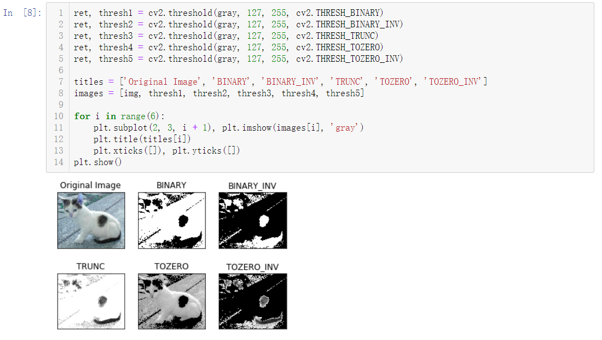
HSV变换
HSV即使用：色相（Hue）、饱和度（Saturation）、明度（Value）来表示色彩的一种方式。
色相：将颜色使用0∘到360∘表示，就是平常所说的颜色名称，如红色、蓝色。
饱和度：是指色彩的纯度，饱和度越低则颜色越黯淡（0≤S<1）；
明度：即颜色的明暗程度。数值越高越接近白色，数值越低越接近黑色（0≤V<1）；
hsv = cv2.cvtColor(img, cv2.COLOR_BGR2HSV)
图像滤波
图像降噪，使图像更清晰，更平滑
均值滤波
blur1 = cv2.blur(noise_img, (3,3))
3 * 3的卷积核方框滤波
基本和均值一样，可以选择归一化归一化
计算均值滤波blur2 = cv2.boxFilter(noise_img,-1, (3,3), normalize=True)
-1是固定值，一般不需要改变
未归一化
容易越界（未取均值，超过255，一旦越界就取255）- blur3 = cv2.boxFilter(noise_img,-1, (3,3), normalize=False)
高斯滤波
更看重权重，离目标远的权重小，离目标近的权重大gussian = cv2.GaussianBlur(noise_img, (5, 5), 1)
5*5的卷积核
中值滤波
median = cv2.medianBlur(noise_img, 5)
5*5的卷积核
形态学处理
处理二值化图像，获取轮廓 腐蚀=瘦身，膨胀=增
腐蚀（Erode）
kernel = np.ones((3,3), dtype=np.uint8)
核erode_img = cv2.erode(img, kernel, iterations=1)
iterations：迭代（腐蚀）次数不同腐蚀次数的变化
- 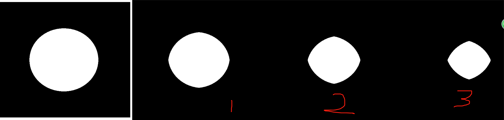
膨胀（Dilate）
kernel = np.ones((3,3), dtype=np.uint8)
核dilate_img = cv2.dilate(erosion, kernel, iterations=1)
不同膨胀次数的变化
- 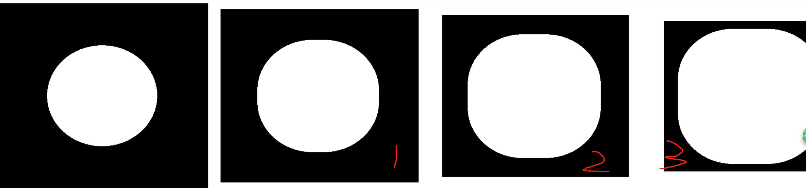
开运算与闭运算
open_close_kernel = np.ones((5,5), np.uint8)开运算：先腐蚀，后膨胀
开运算可以用来去除仅存的小块像素。- openimg = cv2.morphologyEx(img, cv2.MORPH_OPEN, open_close_kernel)
闭运算：先膨胀，后腐蚀
- closeimg = cv2.morphologyEx(img, cv2.MORPH_CLOSE, open_close_kernel)
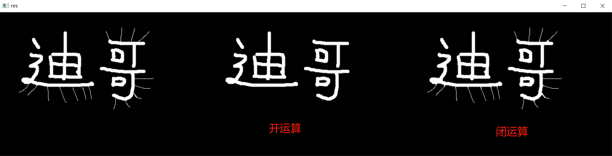
梯度运算
kernel = np.ones((7,7), np.uint8)梯度 = 膨胀 - 腐蚀
形态学梯度为经过膨胀操作（dilate）的图像与经过腐蚀操作（erode）的图像的差，可以用于抽出物体的边缘。
gradient = cv2.morphologyEx(pie, cv2.MORPH_GRADIENT, kernel)
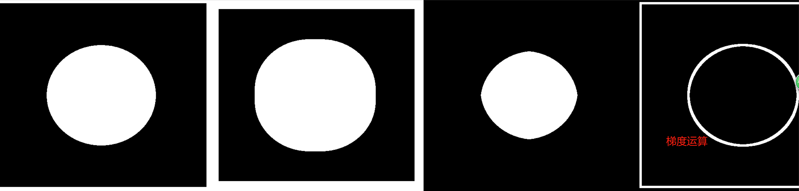
顶帽和黑帽
kernel = np.ones((7,7), np.uint8)顶帽
顶帽 = 原始输入 - 开运算- tophat = cv2.morphologyEx(img1, cv2.MORPH_TOPHAT, kernel)
黑帽
黑帽 = 闭运算 - 原始输入- blackhat = cv2.morphologyEx(img1, cv2.MORPH_BLACKHAT, kernel)
角点检测（图像梯度，边缘检测步骤）
Sobel算子
卷积核
- 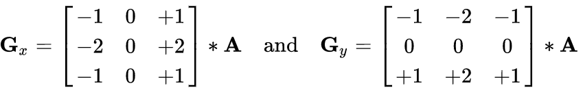
dst = cv2.Sobel(src, ddepth, dx, dy, ksize)
dx=0，dy=1，只计算垂直方向
dx=1，dy=0，只计算水平方向
dx=1，dy=1，直接计算（不建议，效果不好，建议分开计算再）ddepth：图像的深度
dx和dy：分别表示水平和竖直方向
ksize：是Sobel算子的大小（核大小）
sobel = cv2.convertScaleAbs(sobel)
白到黑是正数，黑到白就是负数了，所有的负数会被截断成0，所以要取绝对值sobelxy = cv2.addWeighted(sobelx, 0.5, sobely, 0.5, 0)
分别计算x和y，再求和 0.5：为权重示例
代码
lena = cv2.imread("../img/lena.jpg", cv2.IMREAD_GRAYSCALE) # 分开计算 sobelx = cv2.Sobel(lena, cv2.CV_64F, 1, 0, ksize=3) sobelx = cv2.convertScaleAbs(sobelx) sobely = cv2.Sobel(lena, cv2.CV_64F, 0, 1, ksize=3) sobely = cv2.convertScaleAbs(sobely) sobelxy1 = cv2.addWeighted(sobelx, 0.5, sobely, 0.5, 0) # 直接计算 sobelxy2 = cv2.Sobel(lena, cv2.CV_64F, 1, 1, ksize=3) sobelxy2 = cv2.convertScaleAbs(sobelxy2) show_img([lena, sobelxy1, sobelxy2], hstack=True)
Scharr算子
更敏感卷积核
- 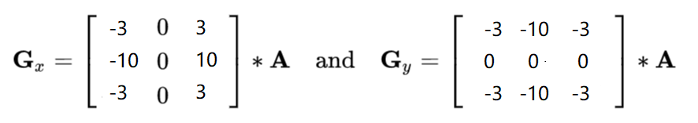
dst = cv2.Scharr(src, ddepth, dx, dy)
示例
代码
scharrx = cv2.Scharr(lena, cv2.CV_64F, 1, 0) scharry = cv2.Scharr(lena, cv2.CV_64F, 0, 1) scharrx = cv2.convertScaleAbs(scharrx) scharry = cv2.convertScaleAbs(scharry) scharrxy = cv2.addWeighted(scharrx, 0.5, scharry, 0.5, 0)
Laplacian算子
二阶导，反应一阶导的变化率，所以对变化更敏感（对噪音点敏感，如果有噪音点就不好检测了）卷积核
- 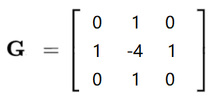
dst = cv2.Laplacian(src, ddepth)
示例
代码
laplacian = cv2.Laplacian(lena, cv2.CV_64F) laplacian = cv2.convertScaleAbs(laplacian)
三者对比
代码
lena = cv2.imread("../img/lena.jpg", cv2.IMREAD_GRAYSCALE) # 分开计算 sobelx = cv2.Sobel(lena, cv2.CV_64F, 1, 0, ksize=3) sobelx = cv2.convertScaleAbs(sobelx) sobely = cv2.Sobel(lena, cv2.CV_64F, 0, 1, ksize=3) sobely = cv2.convertScaleAbs(sobely) sobelxy1 = cv2.addWeighted(sobelx, 0.5, sobely, 0.5, 0) # Scharr算子 scharrx = cv2.Scharr(lena, cv2.CV_64F, 1, 0) scharry = cv2.Scharr(lena, cv2.CV_64F, 0,1) scharrx = cv2.convertScaleAbs(scharrx) scharry = cv2.convertScaleAbs(scharry) scharrxy = cv2.addWeighted(scharrx, 0.5, scharry, 0.5, 0) # Laplacian算子 laplacian = cv2.Laplacian(lena, cv2.CV_64F) laplacian = cv2.convertScaleAbs(laplacian) show_img([lena, sobelxy1, scharrxy, laplacian], hstack=True)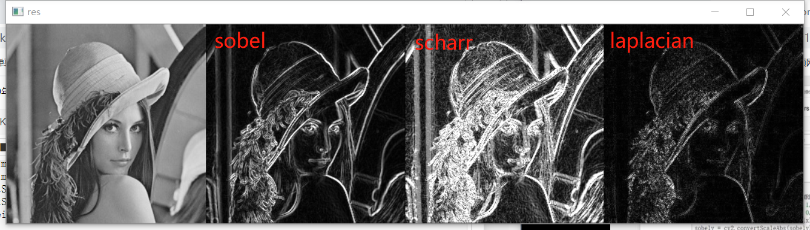
Canny边缘检测
1、 使用高斯滤波器，以平滑图像，滤除噪声。
高斯滤波器
- 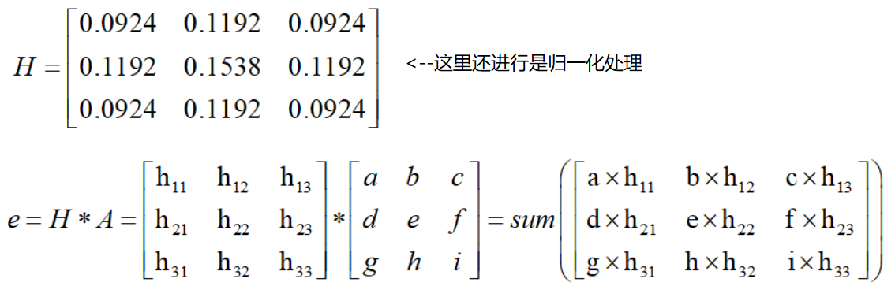
2、 计算图像中每个像素点的梯度强度和方向。
在x方向和y方向上使用Sobel滤波器，在此之上求出边缘的强度和边缘的梯度梯度和方向
- 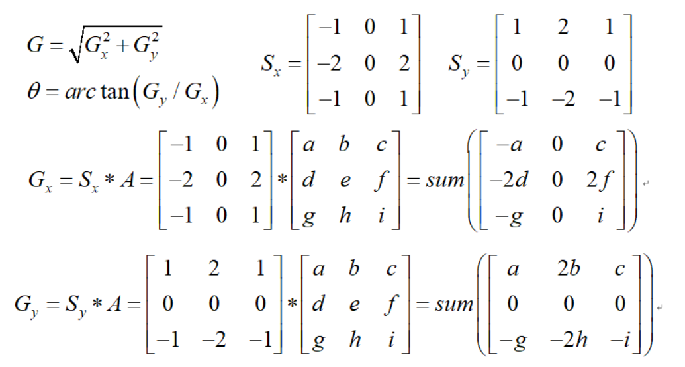
3、 应用非极大值（Non-Maximum Suppression）抑制，以消除边缘检测带来的杂散响应。
非极大值抑制
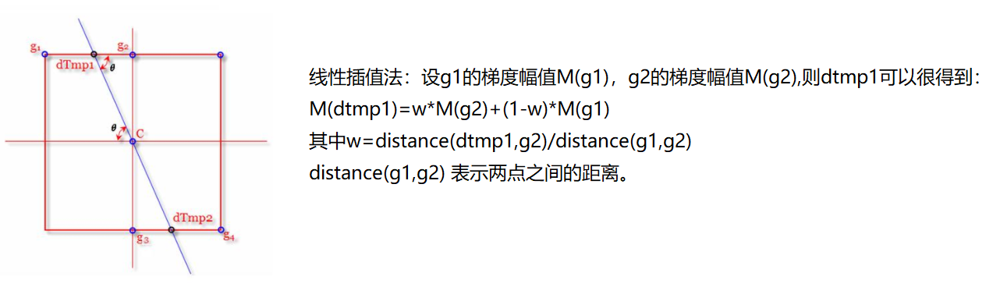
- 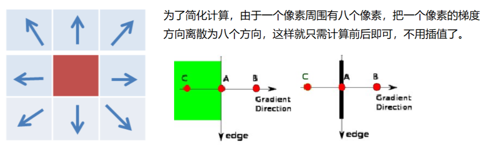
4、 应用双阈值（Double-Threshold）检测来确定真实的和潜在的边缘。
双阈值检测
- 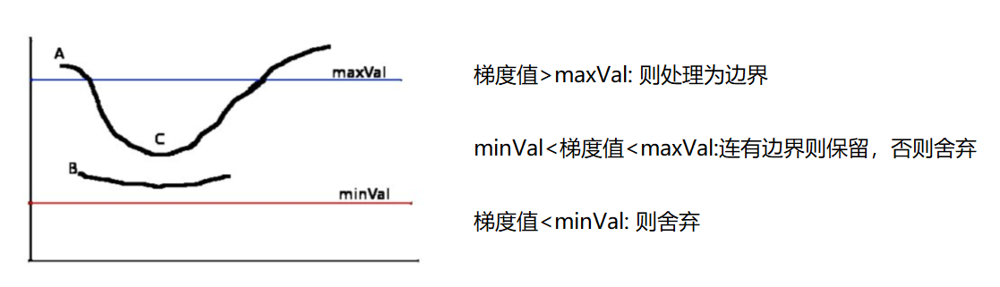
5、 通过抑制孤立的弱边缘最终完成边缘检测。
示例
代码
img=cv2.imread("lena.jpg",cv2.IMREAD_GRAYSCALE) v1=cv2.Canny(img,80,150) v2=cv2.Canny(img,50,100) # 80和150：minVal和maxVal res = np.hstack((v1,v2)) cv_show(res,'res')
图像金字塔
高斯金字塔
- 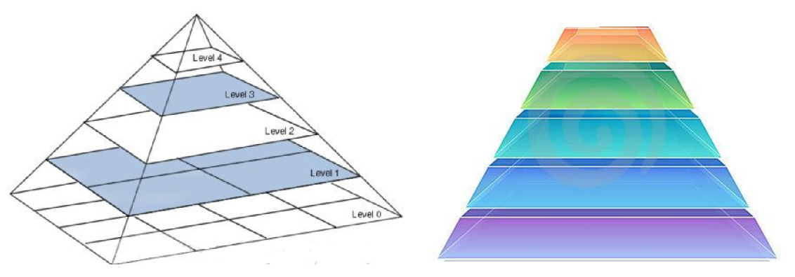
高斯金字塔：向下采样方法（缩小）
- 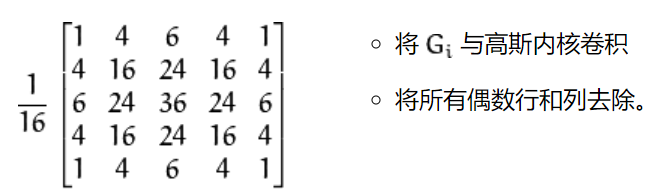
高斯金字塔：向上采样方法（放大）
- 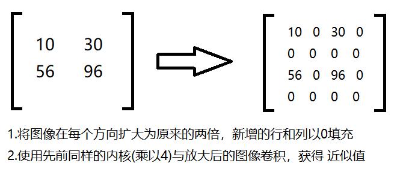
示例
代码
AM = cv2.imread("../img/AM.png") up = cv2.pyrUp(AM) down = cv2.pyrDown(AM) show_img([AM,up,down])展示
原图
向上
向下
拉普拉斯金字塔
Gi：原图
- 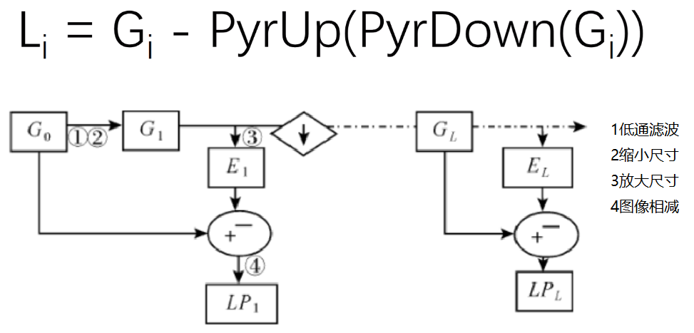
示例
代码
down = cv2.pyrDown(AM) down_up = cv2.pyrUp(down) ret = AM - down_up show_img([AM,ret], hstack=True)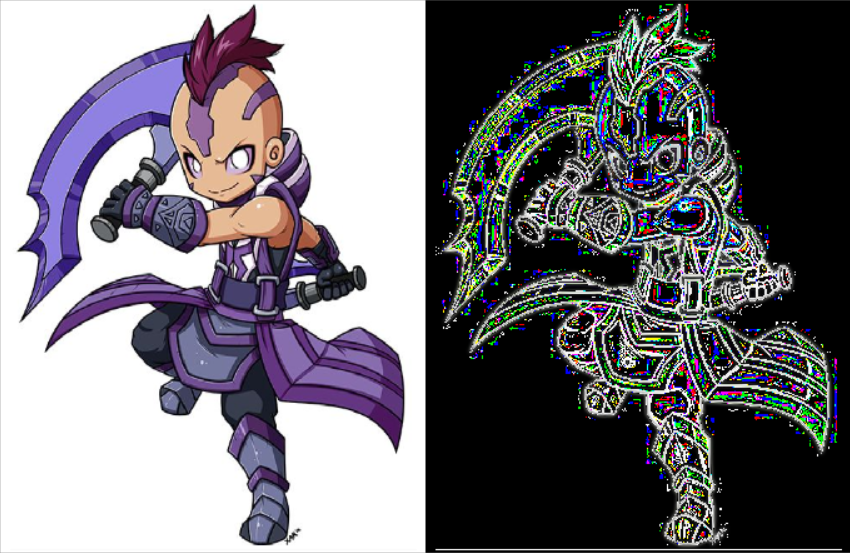
图像轮廓
contours, hierarchy = cv2.findContours(img,mode,method)
为了更高的准确率，使用二值图像。 contours：轮廓信息（用得较多的数据） hierarchy：层级mode：轮廓检索模式
RETR_EXTERNAL：只检索最外面的轮廓；RETR_LIST：检索所有的轮廓，并将其保存到一条链表当中；RETR_CCOMP：检索所有的轮廓，并将他们组织为两层：顶层是各部分的外部边界，第二层是空洞的边界;RETR_TREE：检索所有的轮廓，并重构嵌套轮廓的整个层次;常用
method：轮廓逼近方法
CHAIN_APPROX_NONE：以Freeman链码的方式输出轮廓，所有其他方法输出多边形（顶点的序列）。常用CHAIN_APPROX_SIMPLE:压缩水平的、垂直的和斜的部分，也就是，函数只保留他们的终点部分。
示例
- 代码
# 为了更高的准确率，使用二值图像。 img = cv2.imread("../img/car.png") gray = cv2.cvtColor(img, cv2.COLOR_BGR2GRAY) ret, thresh = cv2.threshold(gray, 127, 255, cv2.THRESH_BINARY) contours, hierarchy = cv2.findContours(thresh, cv2.RETR_TREE, cv2.CHAIN_APPROX_NONE) show_img([img, thresh])
- 代码
绘制轮廓
res = cv2.drawContours(copy_img, contours, -1, (0,0,255), 2)
- 传入绘制图像， 轮廓， 轮廓索引， 颜色模式， 线条厚度
- -1：所有的轮廓都画出来，0：对应的第0个轮廓，1：对应的第1个轮廓
- （0,0,255）：对应：B,G,R，轮廓的颜色（这里是红色）
- 2：线条宽度
示例
代码
# 注意需要copy,要不原图会变 copy_img = img.copy() res = cv2.drawContours(copy_img, contours, -1, (0,0,255), 2) show_img([img, res])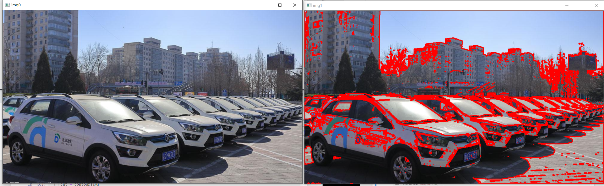
轮廓特征
# 第一个轮廓 cnt = contours[0] # 面积 area = cv2.contourArea(cnt) # 周长，True：表示闭合的 perimeter = cv2.arcLength(cnt, True) print("面积：",area) print("周长：", perimeter)轮廓近似
示例
代码
img = cv2.imread("../img/contours2.png") gray = cv2.cvtColor(img, cv2.COLOR_BGR2GRAY) ret, thresh = cv2.threshold(gray, 127,255, cv2.THRESH_BINARY) contours,hierarchy = cv2.findContours(thresh, cv2.RETR_TREE, cv2.CHAIN_APPROX_NONE) cnt = contours[0] # 绘制轮廓 draw_img = img.copy() res1 = cv2.drawContours(draw_img, [cnt], -1, (0, 0, 255), 2) # 轮廓近似 epsilon = 0.1 * cv2.arcLength(cnt, True) # 按周长比例 approx = cv2.approxPolyDP(cnt, epsilon, True) # 近似 draw_img = img.copy() res2 = cv2.drawContours(draw_img, [approx], -1, (0, 0, 255), 2) show_img([img, res1,res2], hstack=True)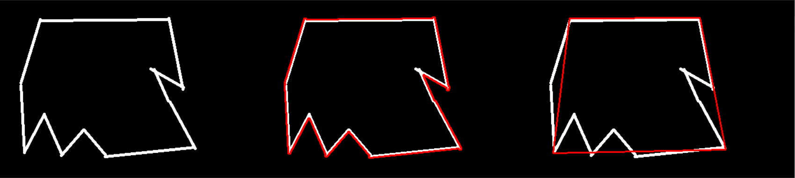
边界矩形
示例
代码
img = cv2.imread("../img/contours.png") gray = cv2.cvtColor(img, cv2.COLOR_BGR2GRAY) ret, thresh = cv2.threshold(gray, 127,255, cv2.THRESH_BINARY) contours,hierarchy = cv2.findContours(thresh, cv2.RETR_TREE, cv2.CHAIN_APPROX_NONE) cnt = contours[0] # 0：第0个轮廓也就是这里的三角形的外接矩形（外轮廓）; 1：内轮廓（内接矩形）..... x,y,w,h = cv2.boundingRect(cnt) img = cv2.rectangle(img, (x,y), (x+w, y+h), (0,0,255), 2) show_img([img])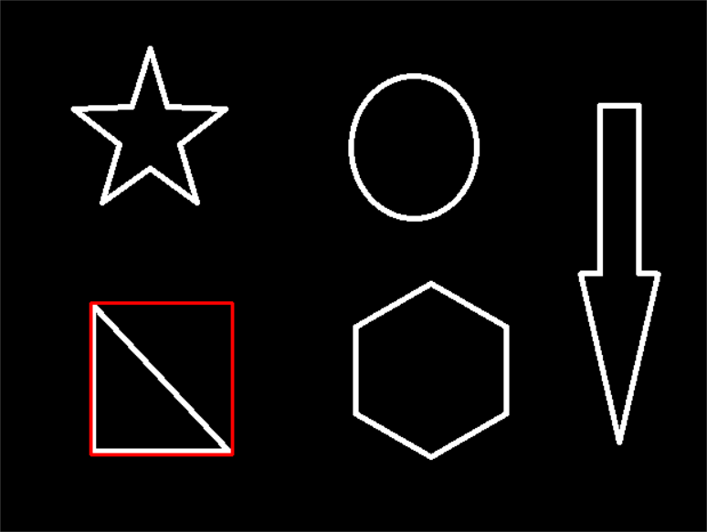
应用
计算面积比
area = cv2.contourArea(cnt) x, y, w, h = cv2.boundingRect(cnt) rect_area = w * h extent = float(area) / rect_area print ('轮廓面积与边界矩形比',extent)
外接圆
示例
代码
(x,y),radius = cv2.minEnclosingCircle(cnt) center = (int(x),int(y)) radius = int(radius) img =cv2.circle(img,center,radius,(0,255,0),2) show_img([img])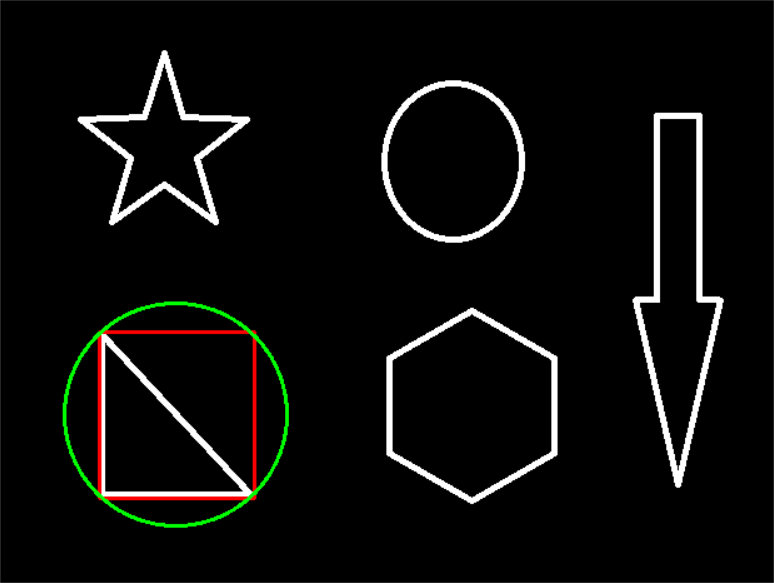
图像模板匹配
*
模板匹配和卷积原理很像，模板在原图像上从原点开始滑动，计算模板与（图像被模板覆盖的地方）的差别程度，这个差别程度的计算方法在opencv里有6种，然后将每次计算的结果放入一个矩阵里，作为结果输出。假如原图形是AxB大小，而模板是axb大小，则输出结果的矩阵是( A-a+1)x(B-b+1)
res = cv2.matchTemplate(img, template, cv2.TM_SQDIFF)
推荐使用包含归一化的TM_SQDIFF：计算平方不同，计算出来的值越小，越相关
TM_CCORR：计算相关性，计算出来的值越大，越相关
TM_CCOEFF：计算相关系数，计算出来的值越大，越相关
TM_SQDIFF_NORMED：计算归一化平方不同，计算出来的值越接近0，越相关
TM_CCORR_NORMED：计算归一化相关性，计算出来的值越接近1，越相关
TM_CCOEFF_NORMED：计算归一化相关系数，计算出来的值越接近1，越相关
min_val, max_val, min_loc, max_loc = cv2.minMaxLoc(res)
最小值，最大值，最小值位置，最大值位置示例
代码
img = cv2.imread('../img/lena.jpg', 0) template = cv2.imread('../img/face.jpg',0) h,w = template.shape[:2] methods = ['cv2.TM_CCOEFF', 'cv2.TM_CCOEFF_NORMED', 'cv2.TM_CCORR', 'cv2.TM_CCORR_NORMED', 'cv2.TM_SQDIFF', 'cv2.TM_SQDIFF_NORMED'] # 模板匹配 res = cv2.matchTemplate(img, template, cv2.TM_SQDIFF) # 最小值，最大值，最小值位置，最大值位置 min_val, max_val, min_loc, max_loc = cv2.minMaxLoc(res) # 绘图比较 for meth in methods: img2 = img.copy() # 匹配方法的真值 method = eval(meth) # 不能是字符串 res = cv2.matchTemplate(img, template, method) min_val, max_val, min_loc, max_loc = cv2.minMaxLoc(res) # 如果是平方差匹配TM_SQDIFF或归一化平方差匹配TM_SQDIFF_NORMED，取最小值 if method in [cv2.TM_SQDIFF, cv2.TM_SQDIFF_NORMED]: top_left = min_loc else: top_left = max_loc bottom_right = (top_left[0] + w, top_left[1] + h) # 画矩形 cv2.rectangle(img2, top_left, bottom_right, 255, 2) plt.subplot(121), plt.imshow(res, cmap='gray') plt.xticks([]), plt.yticks([]) # 隐藏坐标轴 plt.subplot(122), plt.imshow(img2, cmap='gray') plt.xticks([]), plt.yticks([]) plt.suptitle(meth) plt.show()展示
- 模板
匹配多个对象
代码
img_rgb = cv2.imread('../img/mario.jpg') img_gray = cv2.cvtColor(img_rgb, cv2.COLOR_BGR2GRAY) template = cv2.imread('../img/mario_coin.jpg', 0) h, w = template.shape[:2] res = cv2.matchTemplate(img_gray, template, cv2.TM_CCOEFF_NORMED) threshold = 0.8 # 取匹配程度大于%80的坐标 loc = np.where(res >= threshold) # *号表示可选参数 for pt in zip(*loc[::-1]): bottom_right = (pt[0] + w, pt[1] + h) cv2.rectangle(img_rgb, pt, bottom_right, (0, 0, 255), 2) show_img([template, img_rgb])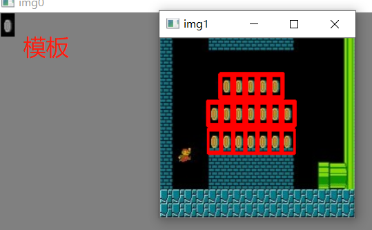